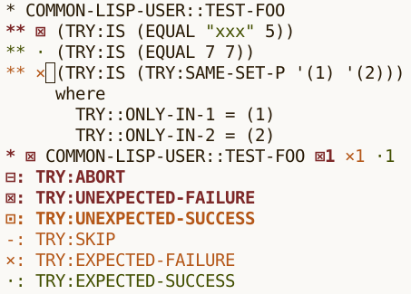

On Multifaceted Development and the Role of Documentation
Tags: tech, lisp, pompousness, Date: 2023-08-17
Catchy title, innit? I came up with it while trying to name the development style PAX enables. The original idea was something vaguely self-explanatory in a straight out of a marketing department kind of way, with tendrils right into your unconscious. Documentation-driven development sounded just the thing, but it's already taken. Luckily, I came to realize that neither documentation nor any other single thing should drive development. Less luckily for the philosophically disinclined, this epiphany unleashed my inner Richard P. Gabriel. I reckon if there is a point to what follows, it's abstract enough to make it hard to tell.
... read the rest of On Multifaceted Development and the Role of Documentation.
Try in Emacs
Tags: tech, lisp, Date: 2023-08-14
Try, my test anti-framework, has just got light Emacs integration. Consider the following test:
(deftest test-foo ()
(is (equal "xxx" 5))
(is (equal 7 7))
(with-failure-expected (t)
(is (same-set-p '(1) '(2)))))The test can be run from Lisp with (test-foo) (interactive
debugging) or (try 'test-foo) (non-interactive), but now there is
a third option: run it from Emacs and get a couple of conveniences
in return. In particular, with M-x mgl-try then entering
test-foo, a new buffer pops up with the test output, which is
font-locked based on the type of the outcome. The buffer also has
outline minor mode, which matches the hierarchical structure of the
output.
 The buffer's major mode is
Lisp, so M-. and all the usual key bindings work. In additition,
a couple of keys bound to navigation commands are available. See the
documentation
for the details. Note that Quicklisp has an older version of Try
that does not have Emacs integration, so you'll need to use
https://github.com/melisgl/try
until the next Quicklisp release.
DRef and PAX v0.3
Tags: tech, lisp, Date: 2023-07-26
DEFSECTION needs to refer to definitions that do not create a
first-class object (e.g. stuff like (*DOCUMENT-LINK-TO-HYPERSPEC*
VARIABLE)), and since its original release in 2014, a substantial
part of
PAX dealt
with locatives and references, which reify definitions. This release
finally factors that code out into a library called
DRef,
allowing PAX to focus on documentation. Being very young, DRef lives
under adult supervision, in a
subdirectory
of the PAX repository.
... read the rest of DRef and PAX v0.3.
PAX Live Documentation Browser
Tags: tech, lisp, Date: 2023-06-10
PAX got a live documentation browser to make documentation generation a more interactive experience. A great thing about Lisp development is changing a single function and quickly seeing how it behaves without the delay of a full recompile. Previously, editing a docstring required regenerating the full documentation to see how the changes turned out. The live documentation browser does away with this step, which tightens the edit/document loop.
PAX also got an apropos browser. It could always generate documentation for stuff not written with PAX in mind, so with the live browser already implemented, this was a just a small add-on.
The trouble with interactivity is, of course, that it's difficult to get the point across in text, so I made two short videos that demonstrate the basics.
There is Try
Tags: lisp, Date: 2022-10-16
Do or do not. There is now Try. I forgot to announce Try, my Common Lisp test framework, on this blog.
Try does equally well in interactive and non-interactive mode by minimizing the function-test impedance mismatch.
It provides a single, extensible check macro. All other checks are built on top of it.
It is highly customizable: what to debug interactively, what to print, what to describe in detail, what to rerun, what to count can all be easily changed.
Customization is based on complex types built from event types, which are signalled when checks or tests are run.
... read the rest of There is Try.
PAX v0.1
Tags: lisp, Date: 2022-02-16
PAX v0.1 is released. At this point, I consider it fairly complete. Here is the changelog for the last year or so.
New Features
To reduce deployment size, made the MGL-PAX system autoload navigation, documentation generation, and transcription code.
Symbols in the CL package are linked to the hyperspec like this:
PRINT, which renders asPRINT.Hyperspec sections and issues can be linked to with the CLHS locative like this:
[lambda lists][CLHS], which renders as lambda lists.Added support for
[see this][foo function]and[see this][foo]style of linking.Added DECLARATION locative.
... read the rest of PAX v0.1.
Journal, the Kitchen Sink
Tags: lisp, Date: 2020-09-04
Ever wished for machine-readable logs and TRACEs, maybe
for writing tests or something more fancy? The
Journal library takes a simple idea:
user-defined execution traces and implements
logging, tracing, a
testing "framework" with mock
support, and an Event Sourcing style
database on top.
... read the rest of Journal, the Kitchen Sink.
Moving the Blog to PAX
Tags: lisp, Date: 2020-05-05
After more than five years of silence, I may be resurrecting my old blog. I already got as far as rewriting it using MGL-PAX, which is a curious choice because PAX is a documentation generator for Common Lisp. The blog "engine" is rather bare-bones but works admirably, especially considering that the implementation is only 72 lines of code, most of which deals with post categories and overview pages with shortened posts, something PAX hasn't seen the need for.
On the Design of Matrix Libraries
Tags: ai, lisp, Date: 2015-02-26
UPDATE: 2020-05-03 – Things have changed the during last 5 years. This is a non-issue in Tensorflow and possibly in other frameworks, as well.
I believe there is one design decision in MGL-MAT that has far reaching consequences: to make a single matrix object capable of storing multiple representations of the same data and let operations decide which representation to use based on what's the most convenient or efficient, without having to even know about all the possible representations.
... read the rest of On the Design of Matrix Libraries.
Bigger and Badder PAX World
Tags: lisp, Date: 2015-02-20
Bigger because documentation for
named-readtables
and
micmac
has been added. Badder because clicking on a name will produce a
permalink such as this:
*DOCUMENT-MARK-UP-SIGNATURES*.
Clicking on locative types such as [variable] on the page that has
just been linked to will take you to the file and line on github
where *DOCUMENT-MARK-UP-SIGNATURES* is defined.
PAX World
Tags: lisp, Date: 2015-01-26
A promise of MGL-PAX has always
been that it will be easy to generate documentation for different
libraries without requiring extensive markup and relying on stable
URLs. For example, without PAX, if a docstring in the MGL library
referenced the matrix class MGL-MAT:MAT from the MGL-MAT library,
it would need to include ugly HTML links in the markdown:
"Returns a [some-terrible-github-link-to-html][MAT] object."... read the rest of PAX World.
Recurrent Nets
Tags: ai, lisp, Date: 2015-01-19
I've been cleaning up and documenting MGL for quite some time now, and while it's nowhere near done, a good portion of the code has been overhauled in the process. There are new additions such as the Adam optimizer and Recurrent Neural Nets. My efforts were mainly only the backprop stuff and I think the definition of feed-forward:
... read the rest of Recurrent Nets.
INCLUDE Locative for PAX
Tags: lisp, Date: 2014-12-06
I'm getting so used to the M-. plus documentation
generation hack that's
MGL-PAX, that I use it for all
new code, which highlighted an issue of with code examples.
The problem is that, the ideally runnable, examples had to live in docstrings. Small code examples presented as verifiable Transcripts within docstrings were great, but developing anything beyond a couple of forms of code in docstrings or copy-pasting them from source files to docstrings is insanity or an OOAO violation, respectively.
... read the rest of INCLUDE Locative for PAX.
Transcripts
Tags: lisp, Date: 2014-10-20
I've just committed a major feature to MGL-PAX: the ability to include code examples in docstrings. Printed output and return values are marked up with ".." and "=>", respectively.
(values (princ :hello) (list 1 2))
.. HELLO
=> :HELLO
=> (1 2)... read the rest of Transcripts.
Higgs Boson Challenge Bits and Pieces
Tags: ai, lisp, Date: 2014-09-23
The Higgs Boson contest on Kaggle has ended. Sticking to my word at ELS 2014, I released some code that came about during these long four months.
... read the rest of Higgs Boson Challenge Bits and Pieces.
Higgs Boson Challenge Post-Mortem
Tags: ai, lisp, Date: 2014-09-23
Actually, I'll only link to the post-mortem I wrote in the forum. There is a also a model description included in the git repo. A stand-alone distribution with all library dependencies and an x86-64 linux precompiled binary is also available.
This has been the Kaggle competition that attracted the most contestants so it feels really good to come out on top although there was an element of luck involved due to the choice of evaluation metric and the amount of data available. The organizers did a great job explaining the physics, why there is no more data, motivating the choice of evaluation metric, and being prompt in communication in general.
... read the rest of Higgs Boson Challenge Post-Mortem.
Liblinear Support Added to cl-libsvm
Tags: ai, lisp, Date: 2013-04-09
In addition to the cl-libsvm asdf system, there is now another asdf system in the cl-libsvm library: cl-liblinear that, predictably enough, is a wrapper for liblinear. The API is similar to that of cl-libsvm.
Stackoverflow Post-Mortem
Tags: ai, lisp, Date: 2013-04-09
After almost two years without a single competition, last September I decided to enter the Stackoverflow contest on Kaggle. It was a straightforward text classification problem with extremely unbalanced classes.
... read the rest of Stackoverflow Post-Mortem.
Alpha–Beta
Tags: ai, lisp, Date: 2010-12-27
It hasn't even been a year yet since I first promised that alpha–beta snippet, and it is already added to Micmac in all its 35 line glory. The good thing about not rushing it out the door is that it saw a bit more use. For a tutorialish tic-tac-toe example see test/test-game-theory.lisp.
The logging code in the example produces
output, which is suitable for cut
and pasting into an org-mode buffer and exploring it by TABbing
into subtrees to answer the perpetual 'What the hell was it
thinking?!' question.
{kind=link}
Nash Equilibrium Finder
Tags: ai, lisp, Date: 2010-12-26
While I seem to be unable to make my mind up on a good interface to alpha–beta with a few bells and whistles, I added a Nash equilibrium finder to Micmac, which is becoming less statistics oriented. This was one of the many things in Planet Wars that never really made it.
... read the rest of Nash Equilibrium Finder.
Planet Wars Post-Mortem
Tags: ai, lisp, Date: 2010-12-01
I can't believe I won.
I can't believe I won decisively at all.
The lead in the last month or so was an indicator of having good chances, but there was a huge shuffling of ranks in the last week and some last minute casualties.
... read the rest of Planet Wars Post-Mortem.
Important Update to the Planet Wars Starter Package
Tags: ai, lisp, Date: 2010-10-25
First, is it possible to get something as simple
as RESOLVE-BATTLE wrong? Apparently, yes. That's what one gets for
trying to port Python code that's pretty foreign in the sense of
being far from the way I'd write it.
... read the rest of Important Update to the Planet Wars Starter Package.
Planet Wars Common Lisp Starter Package Actually Works
Tags: ai, lisp, Date: 2010-09-21
Released
v0.6 (git,
latest
tarball).
The way the server compiles lisp submissions was fixed, and this
revealed a problem where MyBot.lisp redirected *STANDARD-OUTPUT*
to *ERROR-OUTPUT* causing the server to think compilation failed.
Planet Wars Common Lisp Starter Package
Tags: ai, lisp, Date: 2010-09-19
The Google AI Challenge is back with a new game that's supposed to be much harder than Tron was this spring. The branching factor of the game tree is enormous, which only means that straight minimax is out of question this time around. Whether some cleverness can bring the game within reach of conventional algorithms remains to be seen.
... read the rest of Planet Wars Common Lisp Starter Package.
UCT
Tags: ai, lisp, Date: 2010-03-19
As promised, my UCT
implementation is released, albeit somewhat belatedly. It's in
Micmac v0.0.1, see test/test-uct.lisp
for an example. Now I only owe you alpha–beta.
Google AI Challenge 2010 Results
Tags: ai, lisp, Date: 2010-03-01
For what has been a fun ride, the official results are now available. In the end, 11th out of 700 is not too bad and it's the highest ranking non-C++ entry by some margin.
... read the rest of Google AI Challenge 2010 Results.
Google AI Challenge 2010
Tags: ai, lisp, Date: 2010-02-11
Tron is a fun little game of boxing out the opponent and avoiding crashing into a wall first. The rules are simple, so the barrier to entry into this contest is low. Thanks to aeruiqe, who made the Common Lisp starter pack, it took as little as a few hours to get a very bare-bones algorithm going. It's doing surprisingly well: it is number 23 on the leaderboard at the moment with 43 wins, 2 losses and 9 draws.
Micmac Initial Release
Tags: ai, lisp, Date: 2010-02-06
From a failed experiment today, I salvaged Micmac, a statistical library wannabe, which for now only has Metropolis-Hastings MCMC and Metropolis Coupled MCMC implemented. The code doesn't weigh much, but I think it gets the API right. In other news MGL v0.0.6 was released.
Deep Boltzmann Machine on MNIST
Tags: ai, lisp, Date: 2010-01-18
Let me interrupt the flow of the MGL introduction series with a short report on what I learnt playing with Deep Boltzmann Machines. First, lots of thanks to Ruslan Salakhutdinov, then at University of Toronto now at MIT, for making the Matlab source code for the MNIST digit classification problem available.
... read the rest of Deep Boltzmann Machine on MNIST.
Introduction to MGL (part 3)
Tags: ai, lisp, Date: 2009-12-29
UPDATE: This post out of date with regards to current MGL. Please refer to the documentation instead.
In Introduction to MGL (part 2), we went through a trivial example of a backprop network. I said before that the main focus is on Boltzmann Machines so let's kill the suspense here and now by cutting straight to the heart of the matter.
... read the rest of Introduction to MGL (part 3).
Introduction to MGL (part 2)
Tags: ai, lisp, Date: 2009-12-17
UPDATE: This post out of date with regards to current MGL. Please refer to the documentation instead.
After Introduction to MGL (part 1), today we are going to walk through a small example and touch on the main concepts related to learning within this library.
... read the rest of Introduction to MGL (part 2).
Introduction to MGL (part 1)
Tags: ai, lisp, Date: 2009-12-02
This is going to be the start of an introduction series on the MGL Common Lisp machine learning library. MGL focuses mainly on Boltzmann Machines (BMs). In fact, the few seemingly unrelated things it currently offers (gradient descent, conjugate gradient, backprop) are directly needed to implement the learning and fine tuning methods for different kinds of BMs. But before venturing too far into specifics, here is a quick glimpse at the bigger picture and the motivations.
... read the rest of Introduction to MGL (part 1).
Object Initialization with Slot Dependencies
Tags: lisp, Date: 2009-07-04
Consider a class with a trivial initialization dependency between
slots A and B:
(defclass super ()
((a :initarg :a :reader a)
(b :initform 0 :initarg :b :reader b)))
(defmethod initialize-instance :after ((super super) &key &allow-other-keys)
(setf (slot-value super 'a) (1+ (slot-value super 'b))))
(a (make-instance 'super)) => 1
(a (make-instance 'super :b 1)) => 2... read the rest of Object Initialization with Slot Dependencies.
Global Compiler Policy
Tags: lisp, Date: 2009-06-30
A quick note to library implementors: the effects of DECLAIM are
permitted to
persist
after the containing file is compiled, and it is unkind to mutate
your user's settings. Personally, I find DECLAIM too blunt and
prefer to add declarations within functions, even going as far as
introducing LOCALLY subforms just to have a place on which to hang
declarations. But if you are really set on using DECLAIM, please
wrap it like this:
(eval-when (:compile-toplevel)
(declaim (optimize speed)))... read the rest of Global Compiler Policy.
Active Learning for cl-libsvm
Tags: ai, lisp, Date: 2009-06-22
Along the lines of active learning with python &
libsvm,
I added support for
calculating distance of a point from the separating hyperplane to
cl-libsvm. In binary classification,
there is only one SVM involved and one hyperplane. However, with
N-class problems, there is a binary SVM for each of the $N(N-1)/2$
pairs of classes, and there are as many separating hyperplanes,
something the linked python code fails to take into account. As per
the libsvm
FAQ, the
absolute value of the decision value (see PREDICT-VALUES, wrapper
of svm_predict_values) divided by the norm of the normal vector of
the separating hyperplane is the distance. PREDICT-VALUES and
MODEL-W2S are sufficient to calculate it. Note that among the
distributed binaries only the linux-x86 version has been recompiled
with the necessary changes, but patched sources are also included
for your recompiling pleasure.
Calling Convention Hacks
Tags: lisp, Date: 2009-04-19
SBCL's calling convention is rather peculiar. Frames are allocated and mostly set up by the caller. The new frame starts with a pointer to the old frame, then comes the return address, an empty slot and the stack arguments (the first three are passed in registers on x86).
... read the rest of Calling Convention Hacks.
X86oid Pseudo Atomic
Tags: lisp, Date: 2009-03-29
The relatively recent chit - chat about allocation and interrupts have had me looking at ways to speed up pseudo-atomic in SBCL.
... read the rest of X86oid Pseudo Atomic.
Code Alignment on x86
Tags: lisp, Date: 2009-03-09
There has always been a lot of wiggling of SBCL boinkmarks results. It's easy to chalk this up to system load, but the same can be observed running the cl-bench benchmarks under more ideal circumstances. Part of the reason is the insufficient number of iterations of some tests: measurement accuracy is really bad when the run time is below 0.2s, and it is abysmal when there is other activity on the system, which is easy to tell even in retrospect by comparing the real and user time columns.
... read the rest of Code Alignment on x86.
Space Cadet
Tags: lisp, tech, Date: 2008-12-15
Emacs users often report problems caused by strain on the pinky finger, which is used to press the Control key. The standard answer to that is to map Caps Lock to Control. I believe that there is a better way:
... read the rest of Space Cadet.